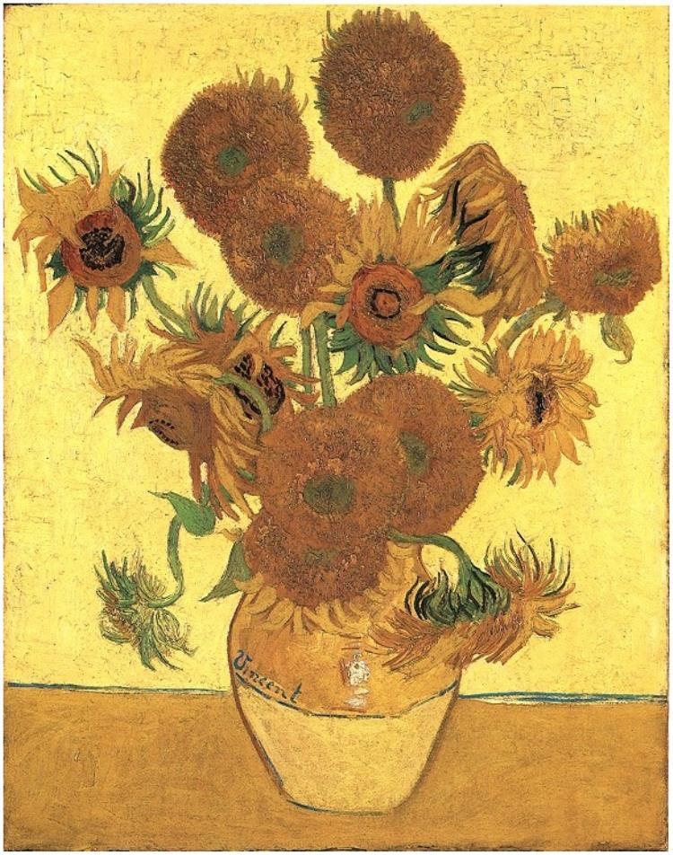

✳
向日葵
SUNFLOWERS
一幅画的另一种生命
交互艺术实验
♫ 播放音乐
原画对照
↗
VINCENT VAN GOGH / ARLES, 1888
一场缓慢的
绽放。
从一抹绿意，到满室金黄。
让时间流动，看向日葵在画外生长。
灵感源自文森特·梵高《向日葵》
以三维形态，重访阳光与生命。
正在唤醒向日葵…
活的静物
/ LIVE STILL LIFE
↻
环绕
⌖
复位
拖动旋转 · 滚轮 / 双指缩放
Vincent
生命的进度
100% · 盛放
▶
02 生长
03 含苞
04 盛放
2×
×

THE ORIGINAL INSPIRATION
向日葵
文森特·梵高 · 阿尔勒，1888
本作品以你提供的原画为参考，重新构建可探索的三维花束。生长动画是艺术化演绎。